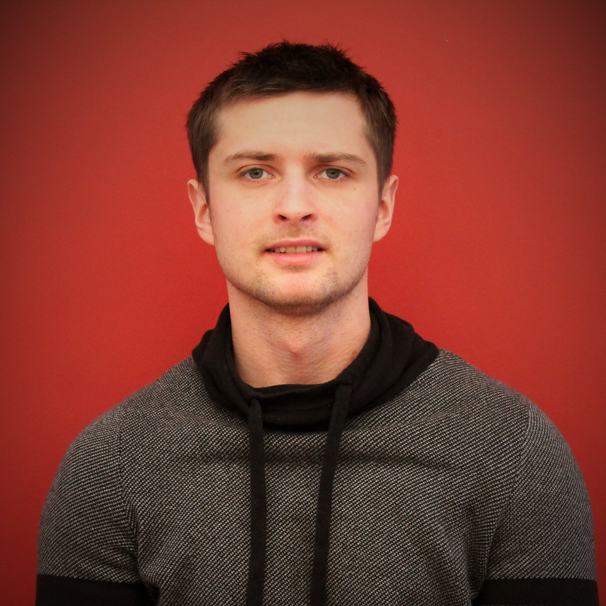

- Name: Dragomir Popov
- Brith date: 27 February 1993
- Address: Kretingos 16, Klaipeda, Lithuania
- Phone Number: +370 61787072
- Nationality: Romania (EU)
My Resume
- September 2014 - December 2015
- Business Department Assistant
- LCC International University, Klaipeda, Lithuania
- Working in MS Office, grading, proctoring, working on individual and group projects, planning and organizing events, report writing and analysis, doing presentations, gathering data, communicating with external parties
- Summer of 2013, 2014 & 2015
- General Manager
- Weatherby's Resort, Grand Lake Stream, Maine, USA
- Managing the quantity and quality of labor of 5 subordinates, writing the bi-weekly working schedule, assigning daily work responsibilities, printing the weekly necessary sheets, checking clients in and out, making money transactions, working with clients (showing them the cabins and the surrounding areas), driving clients to surrounding areas, making reservations (Microsoft Access), answering phone calls, emails, voice mail, salesman in the fly-store, in charge of recycling, inventory control.
- September 2013 - April 2014
- Project manager for the Leadership Volunteer Program at LCC University;
- LCC International University, Klaipeda, Lithuania
- Organizing leadership seminars, assigning volunteer projects to ~50 students, monthly checking the progress of the projects; offering advice and counseling to our fellow leaders, advertising the program in our university and community, 4 out of 6 projects successfully completed the program with more than 50 hours of volunteering per person.
- September 2012 - April 2016
- Bachelors of Arts degree in International Business Administration (Economics Module)
- LCC International University, Klaipeda, Lithuania
- Liberal Arts education with a major in International Business Administration and specialization in Economics
- Cumulative GPA: 8.7/10.00
- March 2010 - May 2012
- Graduated from "Pro Succes Lyceum"
- Chisinau, Moldova
- Grade: 9.30/10.00
- October 2009 - February 2010
- Studied in Gheorghe Cartianu
- Piatra Neamt, Romania
- September 2005 - June 2009
- Graduated from Gymnasium "Spiru Haret",
- Chisinau, Moldova
- Mother tongue
- Romanian
- Other languages
- English
- Russian
- Lithuanian
Find me on:
Facebook LinkedIn Google+